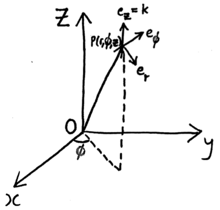
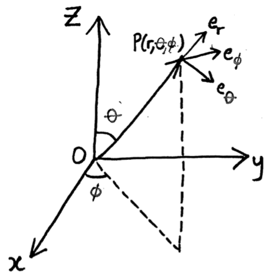

Co-ordinate systems
One of the key aims of this module is to learn about curvilinear co-ordinates. These are co-ordinate systems where, unlike the usual Cartesian co-ordinates, the basis vectors change direction at different points in space.
That may sound confusing, but you should all already have seen one type of curvilinear co-ordinates, (plane) polar co-ordinates. In this module we’ll see two different ways to generalise 2D polar co-ordinates to 3D space, but first we’ll talk through some basic ideas about co-ordinate systems using plane polars as
Defining co-ordinate systems
Typically we define co-ordinate systems by expressing the Cartesian co-ordinates as a function of some other variables.1
For example, in plane polars, \[ x = \rho \cos \phi,\qquad y=\rho\sin\phi. \] The co-ordinates for this system, \((\rho,\phi)\)2 are, respectively, the distance from the origin and the angle anti-clockwise from the \(x\) axis.
We also need to know the range of values these co-ordinates can take, let’s use \(0\leq \phi < 2\pi\) and \(\rho\geq 0\).
Also notice that the co-ordinates break down at the origin, if \(\rho=0\) then the value of \(\phi\) doesn’t matter. That’s quite common with these systems.
Basis vectors & scale factors
The definition of a basis vector is the direction you move from a point in space if you increase a particular co-ordinate. So moving in the direction of \({\mathbf{e}}_x\) increases the value of \(x\) but keeps \(y\) constant. It’s usually assumed to be a unit vector.
In practice, the definition is to differentiate \({\mathbf{r}}\) with respect to the variable and then normalise: \[ \begin{aligned} {\mathbf{e}}_\rho &= \frac{\partial {\mathbf{r}}}{\partial \rho}/\left|\frac{\partial {\mathbf{r}}}{\partial \rho}\right| \\ &= \frac{\partial}{\partial \rho} [\rho \cos \phi,\,\rho\sin\phi] / \left|\frac{\partial}{\partial \rho} [\rho \cos \phi,\,\rho\sin\phi]\right| \\ &= [\cos\phi,\,\sin\phi] / \sqrt{\cos^2 \phi + \sin^2 \phi} \\ &= [\cos\phi,\,\sin\phi] \end{aligned} \] and \[ \begin{aligned} {\mathbf{e}}_\phi &= \frac{\partial {\mathbf{r}}}{\partial \phi}/\left|\frac{\partial {\mathbf{r}}}{\partial \phi}\right| \\ &= \frac{\partial}{\partial \phi} [\rho \cos \phi,\,\rho\sin\phi] / \left|\frac{\partial}{\partial \phi} [\rho \cos \phi,\,\rho\sin\phi]\right| \\ &= [-\rho\sin\phi,\,\rho\cos\phi] / \sqrt{\rho^2\cos^2 \phi + \rho^2\sin^2 \phi} \\ &= [-\sin\phi,\,\cos\phi]. \end{aligned} \]
Note that this also works for Cartestian co-ordinates \[ \begin{aligned} {\mathbf{e}}_x &= \frac{\partial {\mathbf{r}}}{\partial x}/\left|\frac{\partial {\mathbf{r}}}{\partial x}\right| \\ &= \frac{\partial}{\partial x} [x,\,y] / \left|\frac{\partial}{\partial x} [x,\,y]\right| \\ &= [1,0] / \sqrt{1^2 + 0^2} \\ &= [1,0]. \end{aligned} \]
We also define the scale factors \(h_\rho\) and \(h_\phi\) as the magnitude of the derivatives \[h_\rho = \left|\frac{\partial {\mathbf{r}}}{\partial \phi}\right| = 1,\] \[h_\phi = \left|\frac{\partial {\mathbf{r}}}{\partial \phi}\right| = \rho.\]
Scale factors will be useful later in the module. For now just get used to the formulas.
Notating vectors
You’re used to the idea that co-ordinates and basis vectors are kind of interchangable. In Cartesians, the point \((x,y)\) has position vector \[ {\mathbf{r}} = [x,y] = x {\mathbf{e}}_x + y {\mathbf{e}}_y. \] We reserve this square bracket notation for Cartesians, because it doesn’t work in curvilinear co-ordinates.
At a point with co-ordinates \((\rho,\phi)\) in plane polars, the position vector is \[ {\mathbf{r}} = [x,y] = [\rho \cos \phi,\, \rho\sin\phi] = \rho {\mathbf{e}}_\rho. \] Where does \(\phi\) appear in this expression? The answer is that it’s hidden inside the \({\mathbf{e}}_\rho\). You have to know the co-ordinates to understand this position vector.
I think this is the most confusing thing in this module. If you understand this everything else will be easier.
Orthogonal co-ordinate systems
A system is called orthogonal if at any point in space, the basis vectors are orthogonal.
This seems counterintuitive, since we already said that the basis vectors rotate, but it’s easy to verify that plane polars are orthogonal - we just need to check the dot product: \[ {\mathbf{e}}_\rho \cdot {\mathbf{e}}_\phi = [\cos \phi,\,\sin\phi] \cdot [-\sin\phi,\,\cos\phi] = -\cos\phi\sin\phi + \sin\phi\cos\phi = 0. \]
Cylindrical Polars
Imagine plane polar co-ordinates, but now we allow height with the usual \(z\) variable. Notice that \(\rho\) is now the distance from the \(z\)-axis, not from the origin. 
The definition is \[ [x,y,z] = [\rho\cos\phi,\,\rho\sin\phi,\,z] \] with \(\rho>0\), \(0\leq\phi<2\pi\), \(z\in\mathbb{R}\).
You can derive the following: \[ \begin{aligned} {\mathbf{e}}_\rho &= [\cos\phi,\,\sin\phi,\,0],\\ {\mathbf{e}}_\phi &= [-\sin\phi,\,\cos\phi,\,0],\\ {\mathbf{e}}_z &= [0,0,1], \end{aligned} \] \[ h_\rho = 1,\,h_\phi=\rho,\,h_z=1. \]
The general position vector is \[ {\mathbf{r}} = \rho {\mathbf{e}}_\rho + z {\mathbf{e}}_z. \]
Spherical Polars
This one’s a bit more complicate. We use the same \(\phi\) for the angle around from the \(x\)-axis in the \(x-y\) plane3 and now we introduce \(\theta\) as the angle down from the \(z\)-axis4. Also, we use \(r\) as the distance from the origin: 
The definition is \[ [x,y,z] = [r\cos\phi\sin\theta,\,r\sin\phi\sin\theta,\,r\cos\theta] \] with \(r>0\), \(0\leq\phi<2\pi\), \(0\leq \theta \leq \pi\).
You can derive the following: \[ \begin{aligned} {\mathbf{e}}_r &= [\cos\phi\sin\theta,\,\sin\phi\sin\theta,\,\cos\theta],\\ {\mathbf{e}}_\phi &= [-\sin\phi,\,\cos\phi,\,0],\\ {\mathbf{e}}_\theta &= [\cos\phi\cos\theta,\,\sin\phi\cos\theta,\,-\sin\theta], \end{aligned} \] \[ h_r = 1,\,h_\phi=r,\,h_\theta=r\sin\theta. \]
The general position vector is \[ {\mathbf{r}} = r{\mathbf{e}}_r. \]